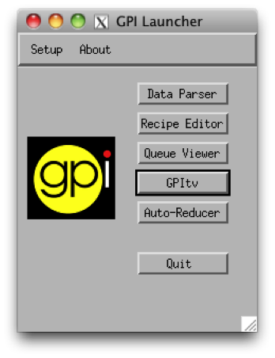

Previous topic
Tutorial 4: Spectrophotometric Calibration For Coronagraphic Imaging Spectroscopy

Tutorial 4: Spectrophotometric Calibration For Coronagraphic Imaging Spectroscopy
The launcher is a fairly simple window that can be used to launch other GUIs. It is the main process for the IDL session that runs the GUIs, and closing it will cause that half of the GPI pipeline to exit, closing all other windows.
The main usage of this window is pretty self-explanatory: press one of the buttons to open the Data Parser, Recipe Editor, and so on.
If desired, you can launch many copies of GPItv by pressing that button multiple times. The other tools are limited to one instance running at a time.
The ‘Setup’ menu contains a few commands which are mostly useful for pipeline debugging and error recovery, and most users will rarely if ever need:
- You can view the values of all directory paths used for the data pipeline, and see whether each is set from an environment variable or the default value is used.
- There are several commands for clearing and resetting the message queue and shared memory used to communicate between the two IDL sessions. These are left from development and debugging in earlier versions of the pipeline, and essentially no one should need to worry about these any more.
The Help menu lets you bring up this HTML documentation, or get information about the version of the GPI data pipeline that you have installed. Similar menu items are present in most GPI GUI windows.
{kind=link}